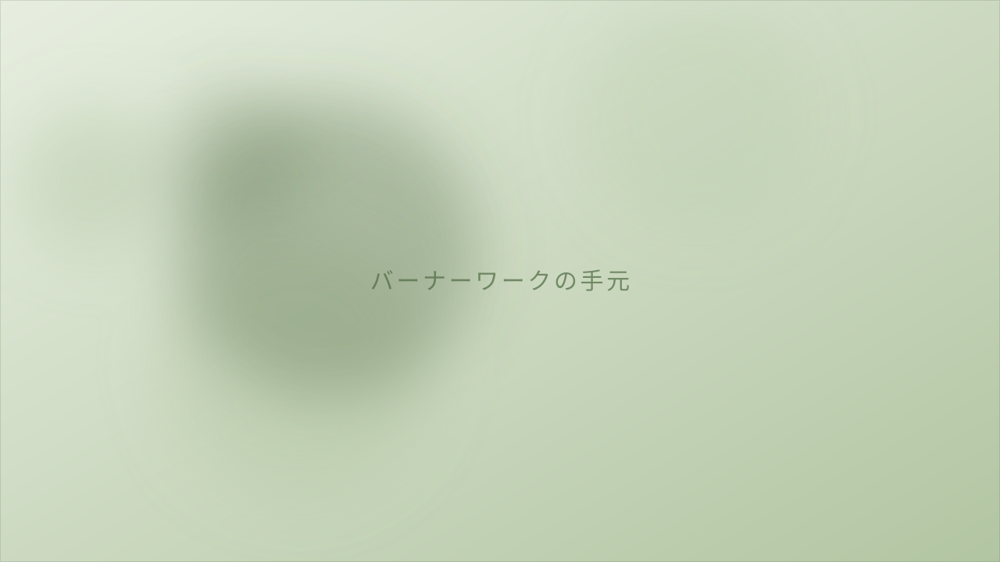

ABOUT
工房について
京都・西陣。二条城と北野天満宮のあいだ、碁盤の目のまちなかに、この工房はあります。工房であり、お店であり、教室でもある小さな場所です。

町家のなかの、火のある部屋
2005年、西陣の町家に工房を構えました。それまでは自宅の工房で教室を開いていましたが、もう少し人の出入りのある場所にしたくて、この町に移りました。
使っているのは「バーナーワーク」という技法です。ガラス棒をバーナーの火で溶かし、やわらかくなったところを巻いたり、引いたり、吹いたりしてかたちにします。窯を使う吹きガラスとくらべると、ずっと小さな火と、小さな道具で進む仕事です。
ガラスは、熱いあいだはいくらでも動き、冷めた瞬間に動かなくなります。だから、つくるというより「そのかたちになった瞬間を逃さない」という感覚に近いかもしれません。
CONCEPT
自然を写しとる
作品のテーマは、いつも自然のなかにあります。空、海、草、生きもの。特別な景色ではなく、歩いているときに目のはしに入ってくるようなものばかりです。
雨あがりの空の色を、そのままガラスの色に置きかえられるわけではありません。けれど、近いものを探して色を重ねていくうちに、見た人が「あ、これは知っている」と思ってくれることがあります。そのときが、いちばんうれしい瞬間です。

HISTORY
これまで
- 1992バーナーワークを学びはじめ、アクセサリーの制作を始める。
- 1999自然をテーマにした制作へ。草花や生きものをモチーフにしはじめる。
- 2000自宅の工房でバーナーワーク教室を開く。
- 2005京都・西陣の町家に「ガラス工房 nazuna薺」を構える。
INFORMATION
工房の概要
- 屋号
- ガラス工房 nazuna薺
- 所在地
- 〒602-8164 京都府京都市上京区十四軒町413-45
- 営業時間
- 10:00 – 17:00
- 定休日
- 水曜・木曜・金曜
- 内容
- ガラス作品の制作・販売／ガラス細工体験／バーナーワーク教室
- 技法
- バーナーワーク（ランプワーク）